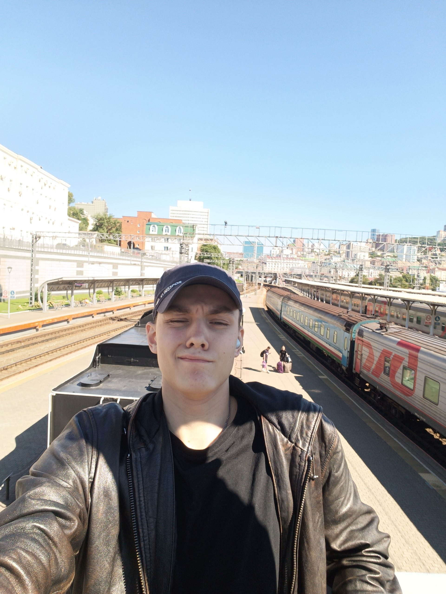

assets/images/profile/portrait.jpg
Пустобаев Никита Иванович
Не экстремист, а тактикульщик
Родился 19 сентября 2007 года, по ЗЗ Дева. В данный момент учусь в ДВФУ на втором курсе направления Прикладная математика и информатика Б9125-01.03.02сп.
Состою в студенческом объединении СК "Борей", программист с маленькой буквы, математик с еще меньшей, веселый, оптимистичный, люблю пиццу и синабоны.
Летопись моей жизни
Собрал самые забавные, интересные моменты из моих 19 лет
1 из 1
Мои увлечения
То чем я занимаюсь по сей день и собираюсь заниматься дальше